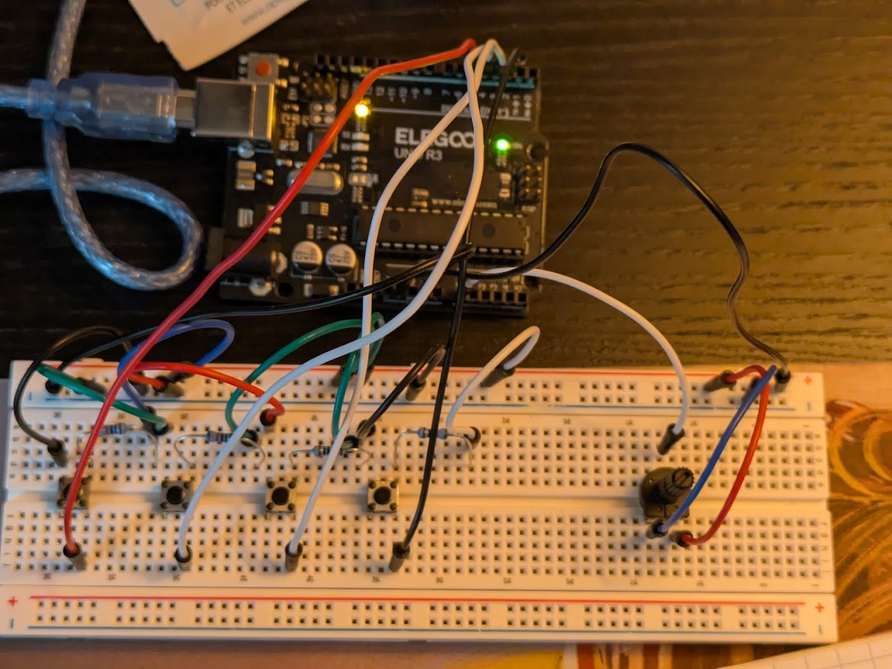
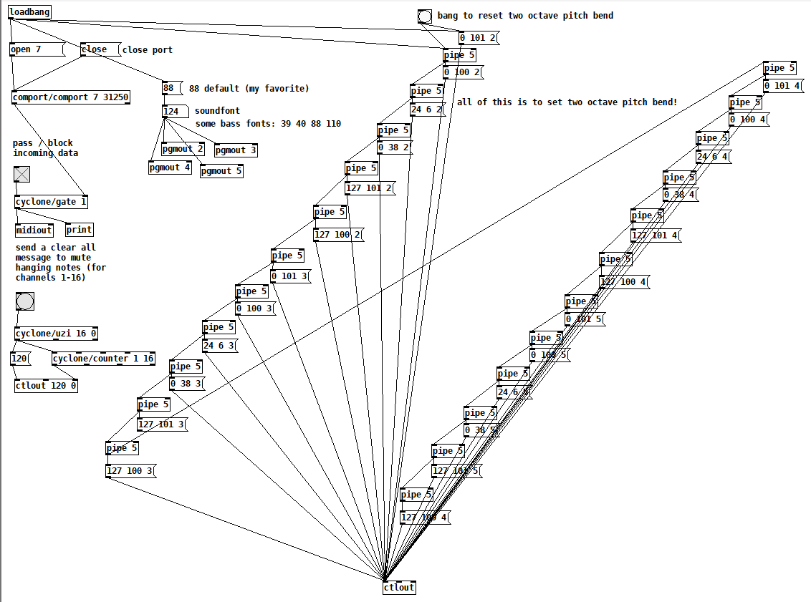

Demo Video
Objectives
The original goal of this project was to create a MIDI controller for a hardware synthesizer using the Ardunio Uno. Specifically, the goal was to create a laser guitar, inspired by Jeff Schmidt's Prism. However, this class was focused on the Arduino and PureData, so I wanted to design a version built off of those frameworks! I didn't quite get to the hardware MIDI integration, but it was a part of the original objective.
Further inspiration came when I first began my research. How did I want to sense the laser? How did I want to sense the fret position? Would it be with infrared? Ultrasonic? Or a physical touch sensor of some kind? Futher inspirations came here, here, and here.
Project Files
Methodology & Build Process
Before I could do anything, really, I had to make sure that the code and logical architecture of the project was functioning. This meant that I needed to create a "simplest version" of my final goal. This was the button synthesizer! Using just the components that came in our starter kit, I wrote the code, modified PureData, and was able to test out the simplest version. The button synthesizer worked as a good analogue to the final version in several ways. Primarily, the buttons were sent to the digital inputs, which would take a binary input of whether or not the button was pressed (analogous to the blocking of a laser "string"). Then, the rotary potentiometer worked as an analogue to the linear membrane softpots I had in mind for the frets of the guitar (variable resitance values sent to the analog inputs of the Arduino).
Quick note: I refer to the potentiometers on the fretboard as membrane pots, softpots, and linear pots interchangeably!


Quick note: because the original architecture was designed for functionality with hardware MIDI, the PureData patch and .ino file look different to what we've been working with in class. Instead of using the arduino2midi Pd converter, the code I wrote send pure MIDI information in the form of bytes. Thus, if I ever get around to connecting the serial output on the Ardunio to a hardware MIDI port, the code will work without issue.
Now that I knew my code was functioning as intended, I was able to start designing the laser hardware, which was a lot more difficult than the buttons. Finding the right components for the right price point was also tricky, but with some advice from the McGill Physics department, I was directed to Abra Electronics here in Montreal, and was able to find everything I needed!
Parts List
- Arduino Uno x1
- USB-B to USB male-to-male
- USB to USB female-to-female
- Arduino Uno ProtoShield x1
- Some extra circuit board
- 5V 650nm Laser Diode x4
- DC Power Supply for the Arduino
- Quad-Op Amp 5V
- Minuature Solar Cell x4
- Membrane potentiometers x4
- 14 pin DIP socket (two rows of seven) x1
- 3 pin DIP socket (one row of 3) x4
- 10kΩ Resistor x4
- 1kΩ Resistor x5
- 12kΩ Resistor x1
- 100kΩ Resistor x4
- Some colourful wires
- 10-32x2 Machine Screws x4
- 6-32x.5 Flat Socket Head Machine Screws x8
- 6-32 Nylon Bolts x2
- Many 6-32x.5 Machine Screws with any head shape
Equipment List
- Multimeter / oscilloscope
- Soldering Iron and Lead (Solder Sucker was needed too)
- 3D Printer with ~1kg of filament
- Superglue
In order for the solar cells to behave in a binary manner (laser shining on it vs. blocked laser), the op amp was required! Using a simple voltage divider circuit and simple measurements of voltage across the solar cells, the op amps will trigger output when the voltage across the solar cell is greater than the threshold defined by the voltage divider. For my setup, the solar cells had a voltage of ~550mV when the laser shone on the active area, ~240mV in ambient lighting, and 0mV in the dark. So, I tuned my voltage divider threshold to ~300mV (R1 = 12kΩ, R2 = 1kΩ).
I used the 10kΩ resistors as current limiting in the solar cell part of my circuit, in series before the cells. The other four 1kΩ resistors were used as current limiting for the membrane pots. The membrane pots have a range of 10-10kΩ Ohms, so at low resistance the current was pretty high through them, and I was a bit worried I'd damage them. This meant I lost some of my ADC range, but by my calculations it was less than a quarter tone, so.
The actual construction involved a LOT of 3D printing. I used the Prusa MK3, MK3+, MK3S+, and the MK4 printers all at different stages in the project. Each printer had strengths and weaknesses, but they were unbeknownst to be at the time of construction, so there wasn't really much thought put into what printer to use. I just used what was available at each point of construction! This also goes for the colour. I think when I make version 2.0, I'll be a bit pickier with what colour each part will be and how I print it.
There are a lot of screws listed in the parts list, and this was for the assembly! I used the 10-32 machine screws for the neck, but I had to cut them to size. The two inch ones I bought were about a third of an inch too long. The flat socket head screws were meant for only the pickguard attatchment to the body, but I ended up using them for the whole assembly. Also, the two listed nylon bolts in the parts list are associated with the two screws that attatch the pickguard to the lower body of the guitar. The thinness of the guard and that piece meant that some extra tightening was necessary.
Another note: all of the holes, except for the neck holes, are designed for 6-32 machine screws!
The DIP sockets listed on the parts list were for the op amp on the circuit board and for the membrane pots. I didn't want to solder either of those directly for fear of cooking them, so the DIP sockets were the solution!
More Progress Demos and Pictures


Challenges
There were many, many challenges that arose during this project. But, it meant I learned a lot! I was unfamiliar with a lot of the electrical component logic, and so trying to understand and problem solve my circuits was a significant challenge. This is where the oscilloscope and solder sucker came in very handy. (I'd also never soldered before!)
One of the recurring issues was regarding floating analog inputs into the Arduino. The problem manifests as noisy, distorted notes (random pitch bend information), and if one fret is pressed, the pitch bend is applied to each string. However, if all four strings are pressed, the instrument behaves as normal. Unfortunately, the softpots didn't have a datasheet available online, and so I had to sort of guess how they work. My hypothesis was that when the softpot isn't pressed, it's an open circuit (infinite resistance). Thus, the analog inputs are floating, and for some reason will pick up on the only signal available, which is the one travelling in the adjacent inputs. This was a relatively straightforward fix though. All I needed was some big resistors (100kΩ) to ground the pins, that would then be bypassed when the fret was pressed (path of least resistance!).
Another issue that occured on occasion is that PureData sometimes misses to setup messages, and doesn't set the range for the pitch bend correctly. This results in the default pitch bend range, with is up a semitone across the entire fretboard. Obviously, this is not ideal, but the fix was pretty simple. All it requires is a press of the reset button on the Arduino. However, this button can't be reached without taking apart the whole guitar! So, the alternative was a loadbang in PureData that sends the same message.
I also fried a few of my solar cells. Thankfully I bought extras, but this was quite tricky to deal with. My hypothesis is that the heat of the soldering iron caused to internal components to cook. Maybe cold solder next time? Laser-cell alignment was also incredibly, incredibly difficult. The active area on the cells is miniscule (2.5mm x 2.5mm), and so getting the beam to shine just right and stay there was a significant challenge.
There were also some mistakes that couldn't really be fixed! For example, the holes that I made to attatch parts of the body to the other parts of the body were place so that I couldn't reach them with a screwdriver. This was really silly in hindsight, but it truly didn't occur to me as I was modeling! I was able to use some pliers and a drill bit and a wrench to get everything attatched, but it was still annoying to deal with. Also, the screws for the neck come a little loose! I think that I could glue it down to help, but it makes me a bit nervous to do so.
I had a lot of great instruction and advice from the lab techs in the Physics department, and this whole project would not have been possible without the resources available to me in the Physics Makerspace. Particularly, the availablity of 3D printers throughout this project to test parts and iteratively modify aspects of the design was invaluable. (I made a lot of test prints!). I'd never done any sort of 3D modelling before this project, so that was also a huge challenge, but a really good learning experience. The CAD for this project was based off of an opensource template I found on OnShape, but was heavily modified for my use case (as well as the printer plate size). The files are downloadable in the .zip at the top of the page, or by clicking on the image below.

Another demo video!
The "two string" in the title is due to the fact that two of the four strings were broken.
Current Status
As of now, 3/4 of the strings are working, however the 4th string is broken for a reason I'm aware of! It's also a reason that isn't very surprising to me: the solar cell is toast. So, it should be easily fixable when i can get around to replacing it.
The last piece of the body is also missing. However, this is a purely cosmetic thing. The guitar works as intended, and the lack of this last piece doesn't actually impact the playability of the instrument.
Next Steps
There are a lot of visions I have for the next version of the instrument!
For example, are solar cells the best thing for sensing? They were incredibly cheap and work reliably (not considering their poor solderability), but is there something that would be an improvment? Photoresistors? A diode that doesn't require an op-amp? I'm not sure what the best solution is yet, but it's definitely something worth considering. On a similar note, would a red film improve sensitivity? This would theoreticlaly block all but the red wavelengths I'm sending to the cells, but would this help much? I'm not sure at the moment, but I think it'd be worth looking into.
As mentioned previously, I think my screw placement could absolutely be improved. It was quite a bit of a pain to get everything attatched, and so I think design improvements could certainly be made on this front. The screw loosening on the next of the guitar could also be improved, but I'm not entirely sure what that would look like!
The issue of laser alignment was frustrating at times, and so I think improvements could be made here as well. More structurally sound lasers would be a good start, and I think there might be a better way to align them than I constructed as well.
A few other miscellaneous things would be 50cm membrane pots (they were both quite expensive and wouldn't ship in time) for a more "true" feeling for the instrument, the aforementioned reset button and hardware MIDI capabilities, and also a more secure power supply attatchment. It's a bit sketchy at the moment, and if I can find a solution similar to the USB extension , that would be absolutely ideal. Also, I'm sure there's a more elegant circuit that I could construct. Looking at my own board (which I am still fond of!), it certainly appears a bit janky.
Despite all of the above, I'm still very happy with how the instrument has turned out! It's been a blast to build, and an incredible learning experience.